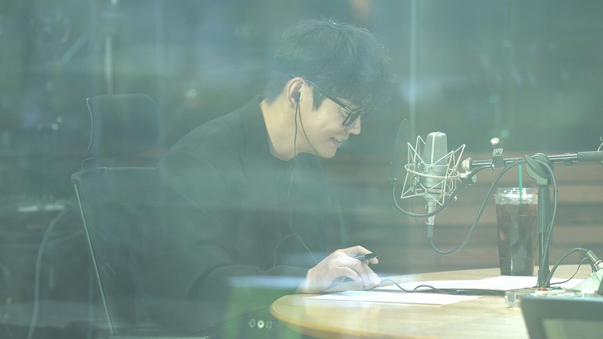
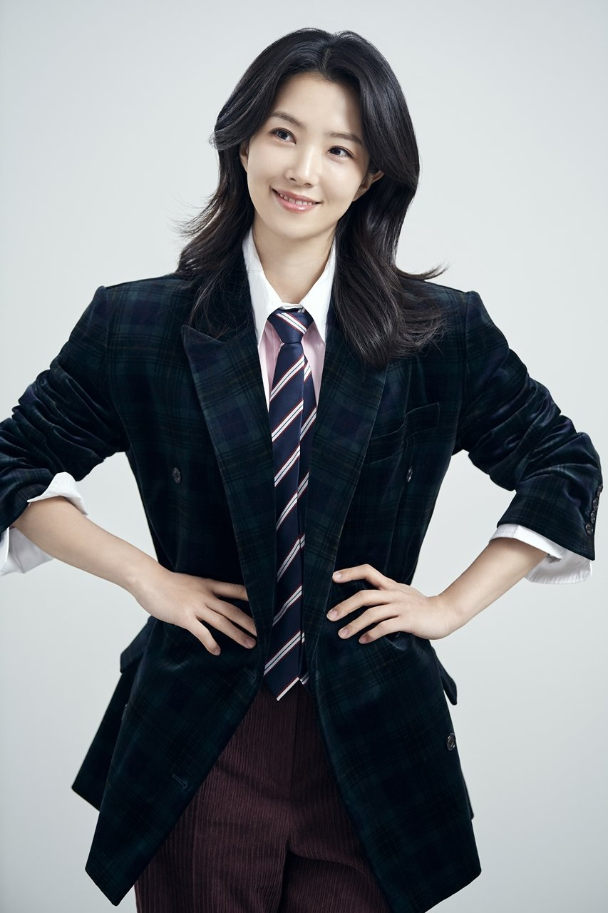
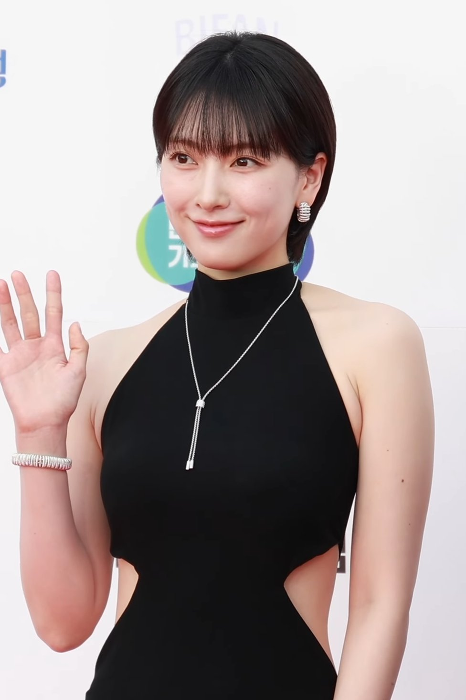

출근길 라디오 목소리가 이달 말 바뀌어요. MBC '굿모닝FM'을 3년 6개월 동안 지킨 테이가 하차하고, 강지영이 새 DJ로 마이크를 이어받아요. 언제까지 테이를 들을 수 있고, 언제부터 강지영인지 날짜부터 정리했어요.
📷 사진 1 자리
▲ 사진: 걈쟈됴리 / CC BY-SA 4.0 / 위키미디어 공용
22일 일요일 작별, 25일 수요일 시작
두 사람의 교체는 이틀 간격으로 따로 알려졌어요. 11월 9일 테이의 하차 소식이 먼저 나왔고, 11일에 후임이 강지영으로 정해졌다는 발표가 이어졌어요.
테이의 마지막 방송은 11월 22일이에요. 달력으로 보면 일요일이죠. 강지영의 첫 방송은 11월 25일 수요일이에요. 테이의 목소리로 듣는 '굿모닝FM'은 22일까지예요.
마지막 방송과 첫 방송 사이에는 23일과 24일, 이틀이 비어요. 이 이틀 동안 누가 진행하는지는 아직 알려지지 않았어요.
한 번에 보면 이래요.
테이가 직접 고른 하차
하차는 테이 스스로 정했어요. 오랜 고민 끝에 직접 내린 결정이라고 밝혔고, 이유로는 새 앨범 작업에 집중하고 싶다는 뜻을 들었어요.
하차 소식이 나온 날 여러 매체가 붙인 말도 '가수 활동 집중', '본업 집중'이었어요.
라디오를 떠나는 이유가 다른 방송이 아니라 노래라는 점이 눈에 띄어요. 3년 6개월 동안 아침 라디오를 맡아 온 만큼, 이제는 가수 활동에 시간을 쓰겠다는 선택으로 읽혀요.
강지영, 15년 만에 다시 MBC로
새 DJ 강지영은 JTBC 아나운서 출신이에요. JTBC를 떠난 뒤 요즘은 쿠팡플레이 '직장인들' 시즌3에 나오고 있어요.
📷 사진 2 자리
▲ '굿모닝FM' 새 DJ 강지영 · 사진=MBC 제공
이번 소식에서 여러 매체가 공통으로 붙인 말은 '15년 만의 MBC 복귀'였어요. 오랜만에 돌아오는 방송사에서 맡은 자리가 아침 라디오 진행이라는 점이 이번 발탁의 핵심이에요.
📷 사진 3 자리
▲ 사진: 티비텐 TV10 / CC BY 3.0 / 위키미디어 공용
정리하면서 가장 눈에 띈 건 마지막 방송과 첫 방송 사이의 이틀 공백이었어요. 테이의 마지막 인사를 듣고 싶은 분이라면 22일을 따로 챙겨 두는 게 좋겠어요. 아나운서 출신에 예능 경험까지 쌓은 강지영이 아침 시간대를 어떤 말투로 채울지는 25일 첫 방송에서 확인할 수 있어요.
✍️ 직접 보거나 들은 경험이 있으면 위 문단에 한두 줄 덧붙이세요 (이 안내 줄은 지우기)
테이의 '굿모닝FM'은 11월 22일이 마지막이고, 강지영의 '굿모닝FM'은 11월 25일 MBC 라디오에서 시작해요.


